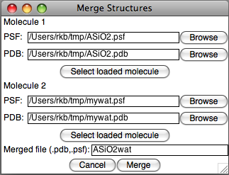

MergeStructs Plugin

The MergeStructs plugin is a simple tool for combining two structures, each defined by one PDB and one PSF file, into a single pair of PDB/PSF files. It scans each file for PDB Segment ID conflicts, and presents an interactive dialog to remove the conflicts. It preserves any existing bonds in the two structures, but does not build bonds new between atoms in the combined structures.
Each molecule is selected by either providing the individual files, or by selecting a loaded molecule in VMD. Since the plugin works directly on files, not the molecule loaded into VMD, only loaded molecules that were originally loaded from a PDB and a PSF file may be selected. Furthermore, the files themselves will be used; no changes made within VMD and not previously saved to the PDB and PSF files will be seen by the plugin.
Next, the plugin requests a filename to be used for the merged output. For example, if the file name "ASiO2wat" is used, two files will be created, "ASiO2wat.pdb" and "ASiO2wat.psf".
After clicking "Merge", the plugin will read in both structures and scan them for duplicate segment names. In order to avoid duplications of atom numbers between the two structures, the plugin will modify duplicate segment names so that no collision can occur. If there are no duplicate segment names, the plugin will produce the merged files. Otherwise, for each duplicate, a dialog will show up presenting 4 options.
- Add prefix to conflicting segment names: Change segment names by adding a prefix to every segment name in molecule 1 and/or molecule 2. For example, if each molecule contains segments named "SEG", and you specify a prefix of "1" for molecule 1 and "2" for molecule 2, the segement from molecule 1 will be called "1SEG" and from molecule 2, "2SEG". If a segment name in either molecule is so long that adding the prefix will exceed the 4 character segment name limit, it will not be changed.
- Add suffix to conflicting segment names: Change segment names by adding a suffix to every segment name in molecule 1 and/or molecule 2. For example, if each molecule contains segments named "SEG", and you specify a suffix of "1" for molecule 1 and "2" for molecule 2, the segement from molecule 1 will be called "SEG1" and from molecule 2, "SEG2". If a segment name in either molecule is so long that adding the suffix will exceed the 4 character segment name limit, it will not be changed.
- Replace first character in conflicting segment names: Change segment names by replacing the first character in every segment name in molecule 1 and/or molecule 2. For example, if each molecule contains segments named "SEG", and you specify a suffix of "1" for molecule 1 and "2" for molecule 2, the segement from molecule 1 will be called "1EG" and from molecule 2, "2EG".
- Specify new segment names: Each duplicated segment name is displayed, along with 2 text input boxes for the 2 molecules. The segment names in each molecule will be replaced with the specified segment names.
After performing the specified substitutions, the two molecules are compared again and any new name conflicts detected. The dialog is presented again, and if conflicts are detected, a new set of changes is requested and applied, until no name conflicts are detected. Then the combined structure is written to the output file.